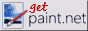
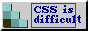
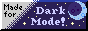

JS Paint è incluso anche in versione basata sul Web di Windows 98,
insieme a Blocco note, Campo minato, Registratore di suoni, Calcolatrice e Winamp.
Fantasioso collegamento di immagini multistrato con una cornice di finestra in legno che ingrandisce al passaggio del mouse.
Versione desktop
Per un'esperienza più nativa, puoi installare l'app desktop JS Paint.
Funziona su Windows, macOS e Linux.
L'interfaccia utente per l'installazione delle PWA varia in base al browser e al sistema operativo.
Sulla maggior parte dei browser desktop, la richiesta di installazione si trova nella barra degli URL.
Sui dispositivi mobili, la richiesta di installazione si trova generalmente nel menu delle opzioni del browser. Vedere Installazione di PWA per la guida visiva.
impedisce che l'immagine flottata mobipaint.png si sovrapponga alla sezione successiva
Richiede Python 3.10 o successivo e un emulatore di terminale con supporto Unicode e True Color.
Funziona bene Terminale Windows, ma non nel vecchio Console di Windows
Funziona bene iTerm2, ma non quello integrato in macOS Terminal.app
Funziona bene Terminale GNOME e la maggior parte degli emulatori di terminale Linux, ma non il Consolle Linux
MSJSPaint è stato costruito utilizzando il Testuale framework, con cui è stato molto divertente lavorare!
Potrei avere altri progetti di pittura in programma, da pazzo quale sono.üé®
Cosa c'è di più retrò di un programma Paint basato su terminale, mi chiedo?
"clear: Both" nel caso in cui la GIF flottata sia troppo invadente, ad esempio se le dimensioni dei caratteri o i margini sono stati modificati o i paragrafi sono stati spostati o rimossi.
estende lo sfondo quando gli elementi flottati si avvolgono
Ecco alcuni pulsanti che ho realizzato
Sentiti libero di copiarli sul tuo sito!
Alcuni di loro sono spazzatura, ma di alcuni sono abbastanza soddisfatto.
Fare clic con il tasto destro sull'immagine e selezionare "Salva immagine con nome..." per scaricarla,
quindi copia e incolla il codice HTML sottostante nel tuo sito,
e aggiornare il src attributo per puntare al punto in cui stai ospitando l'immagine.
Ecco alcuni pulsanti che ho raccolto
Non so da dove provengano la maggior parte di questi e ne ho riproposti alcuni.



script diviso per mantenerlo solo sopra ES5


 Leggi informazioni sul progetto e sulle funzionalità extra su il file leggimi
Leggi informazioni sul progetto e sulle funzionalità extra su il file leggimi